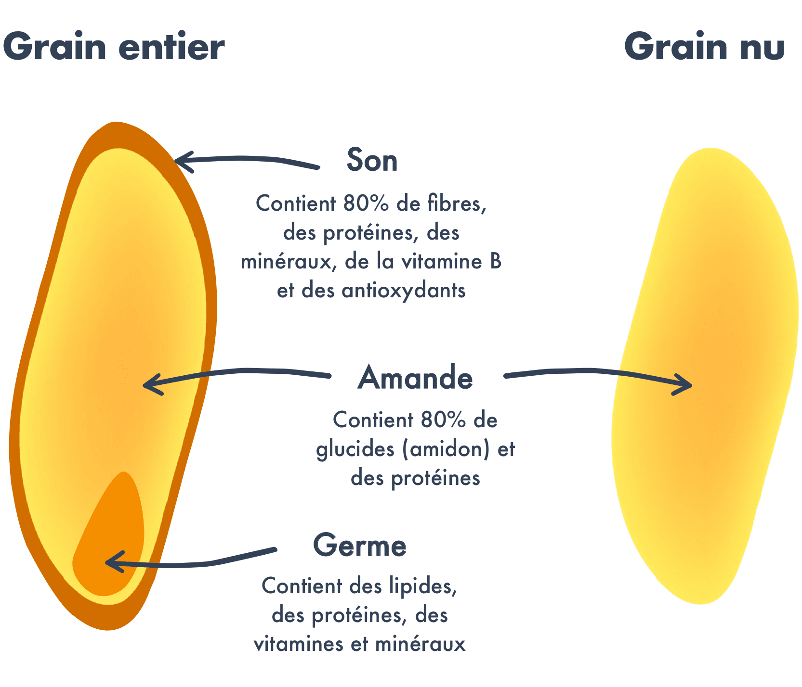
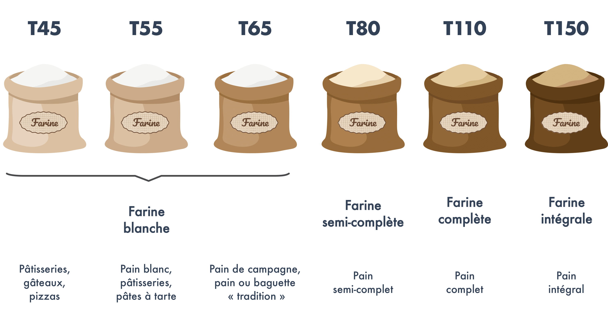

Ah, la France et le pain, une grande histoire d’amour ! Les Français consomment en moyenne 120g par jour soit…44 kgs par an ! Avec une quantité aussi importante, il est donc nécessaire de se poser la question de l’impact du pain sur notre santé afin de choisir le bon type de pain. Avec l’aide du nutritionniste Anthony Berthou, on vous a listé les principaux éléments à regarder pour bien choisir son pain.
Pain blanc ou pain complet ?
Le pain complet est bien plus riche en fibres que le pain blanc. En effet, la farine utilisée pour le pain complet est faite à partir des grains entiers qui conservent leur enveloppe (le son). Or, l’enveloppe est la partie du grain qui contient le plus de fibres. On compte ainsi dans le pain complet environ 2 fois plus de fibres que dans le pain blanc. Or, notre consommation de fibres est souvent insuffisante. Pourtant, les fibres jouent un rôle essentiel afin de réguler notre glycémie (voir notre article sur les glucides), d’éliminer certains éléments toxiques que nous ingérons comme les pesticides et de renforcer notre système immunitaire.
Le pain complet est aussi plus riche en vitamine B et en minéraux (fer, manganèse, magnésium, zinc, sélénium…). Ils sont en effet contenus dans l’enveloppe du grain mais aussi dans le germe qui est détruit lors du processus de raffinage.
Attention cependant : le pain complet est à choisir impérativement bio car l’enveloppe de la graine est la partie qui contient le plus de pesticides.

Le pain blanc, et notamment la baguette, peut par ailleurs contenir de nombreux additifs qui ont pour objectif d’accélérer la fabrication et d’améliorer la conservation. Pour les inconditionnels de la baguette, préférez la baguette tradition car son appellation exige qu’elle ne renferme aucun additif et oblige ainsi les boulangers à utiliser des farines de meilleure qualité pour sa fabrication.
Petit bémol cependant concernant le pain complet : il contient des composés (les phytates notamment) qui limitent l’absorption du calcium et du zinc.
Encore plus riche en fibres et en minéraux que le pain complet, on trouve aussi le pain intégral. Le pain intégral est réalisé avec une farine qui n’a reçu aucun raffinage et qui conserve ainsi l’intégralité des composants de la céréale (la farine utilisée pour le pain complet a quant à elle été légèrement raffinée).
À base de quelle farine ?
Le gluten est ce qui permet l’élasticité d’une pâte. Le problème du gluten réside dans le fait que nos variétés modernes de blé ont subi de nombreux croisements génétiques afin d’augmenter la concentration en gluten du blé et rendre ainsi la pâte plus élastique pour avoir de meilleurs rendements. Notre organisme se retrouve donc à devoir assimiler une quantité beaucoup plus abondante de gluten qu’avant. Or, le gluten contribue à augmenter la perméabilité intestinale : la muqueuse intestinale devient plus perméable et laisse passer des fragments qui n’auraient normalement pas dû passer (voir notre article sur le gluten).
Cela peut alors entraîner des réactions immunitaires et inflammatoires et contribuer aux risques d’apparition de troubles fonctionnels et d’hypersensibilités alimentaires (inconforts digestifs, inflammations intestinales, migraines), voire augmenter le risque de déclenchement d’infections à répétition, de pathologies inflammatoires chroniques ou auto-immunes en cas de prédisposition génétique (eczéma, asthme, sclérose en plaques, polyarthrite rhumatoïde, maladie de Crohn, otites et bronchites à répétition, etc.).
La farine de blé est très riche en gluten, il est donc intéressant de varier les types de farine pour des variétés moins riches en gluten. Une alternative très intéressante est la farine de petit épeautre, qui contient très peu de gluten. L’épeautre est un blé rustique qui a subi peu de transformations. Il est riche en acides gras mono et poly-insaturés, en minéraux et en vitamines (E et B). Par ailleurs, ses protéines contiennent les huit acides aminés essentiels dont le corps a besoin, ce qui est rare pour une céréale. La farine d’épeautre, différente de celle de petit épeautre, est plus riche en gluten et donc un peu moins digeste.
La farine de sarrasin est aussi une alternative intéressante : elle est riche en fibres, en protéines et en antioxydants. Le sarrasin a par ailleurs un effet probiotique : il stimule la flore intestinale et aide ainsi à renforcer le système immunitaire. Seul inconvénient de la farine de sarrasin, elle a un indice glycémique plus élevé. Enfin, vous pouvez aussi opter pour de la farine de seigle. Pauvre en gluten, le seigle est riche en fibres et en antioxydants.
Les farines de quinoa, riz, maïs ou encore châtaigne sont également des alternatives contenant peu ou pas de gluten, mais dont l’intérêt nutritionnel est limité. Le riz est par ailleurs connu pour sa capacité à absorber fortement les substances toxiques (en particulier l’arsenic) et à accumuler les métaux lourds : il est donc fortement recommandé de choisir un pain bio s’il est à base de farine de riz. Les farines de châtaigne et de riz ont par ailleurs un indice glycémique élevé.
Un autre élément à prendre en considération pour la farine est la finesse de raffinage, notamment si vous faites votre pain maison. Elle est indiquée avec la lettre T suivie d’un chiffre. Plus le chiffre est élevé, moins la farine est raffinée. Chaque farine a son propre système de code. Pour la farine de blé, les codes sont les suivants :

Pain à la levure ou au levain ?
La différence entre la levure de boulanger (à ne pas confondre avec la levure chimique utilisée pour faire lever les gâteaux) et le levain réside dans les ferments utilisés.
La levure de boulanger est en réalité un champignon microscopique présenté sous forme sèche ou fraîche, et qui est aussi utilisé pour faire de la bière et du vin. Cette levure permet de produire une fermentation alcoolique rapide, et donc de réduire le temps de fermentation nécessaire pour faire lever la pâte à pain.
À la différence de la levure, le levain provient uniquement des substances présentes naturellement dans la composition du pain. En effet, le levain résulte de la fermentation provoquée par les bactéries présentes sur l’enveloppe du grain de blé. Il va produire une fermentation lactique, beaucoup plus lente que la fermentation alcoolique, ce qui explique sa plus faible utilisation par les boulangeries.
Le pain au levain présente un 1er avantage : il est plus digeste. En effet, les bactéries lactiques formées au cours de la fermentation vont initier le travail d’acidification et donc de digestion. La fermentation va aussi contribuer à dégrader en partie le gluten, qui peut poser des problèmes de digestion. Il est particulièrement conseillé de choisir du pain au levain pour les pains complets qui peuvent être plus difficiles à digérer.
Par ailleurs, l‚Äôindice glyc√©mique du pain au levain est plus faible que celui du pain √† la levure (voir notre article sur les glucides et l’indice glyc√©mique). Il est d‚Äôenviron 65 contre plus de 80 pour celui √† la levure. Le pain au levain va donc permettre une diffusion plus lente des glucides, et donc limiter les fringales et le stockage des glucides sous forme de graisses.
Enfin, le pain au levain présente aussi un apport plus élevé en vitamines et minéraux. En effet, les vitamines et minéraux du pain sont enfermés dans une molécule appelée l’acide phytique. Cet acide reste intact au cours de la digestion et empêche les vitamines et minéraux de franchir la barrière intestinale pour passer dans notre organisme : ils ne sont donc pas ou peu assimilés. Dans le cas du pain au levain, les bactéries lactiques produites au cours de la fermentation vont permettre de neutraliser l’acide phytique, qui va alors libérer les vitamines et minéraux afin qu’ils soient assimilés par l’organisme.
Tour d’horizon des pains

- CIQAL – https://ciqual.anses.fr/#/aliments/7110/pain-complet-ou-integral-(a-la-farine-t150)
- Fasano. 2011 « Zonulin and Its Regulation of Intestinal Barrier Function: The Biological Door to Inflammation, Autoimmunity, and Cancer ». Physiological Reviews 151-175.
- Hollon et al. 2015. “Effect of gliadin on permeability of intestinal biopsy explants from celiac disease patients and patients with non-celiac gluten sensitivity”. Nutrients 7(3):1565-1577.
- Korem T, Zeevi D, Zmora N, Weissbrod O, Bar N, Lotan-Pompan M, Avnit-Sagi T, Kosower N, Malka G, Rein M, Suez J, Goldberg BZ, Weinberger A, Levy AA, Elinav E, Segal E. Bread Affects Clinical Parameters and Induces Gut Microbiome-Associated Personal Glycemic Responses. Cell Metab. 2017 Jun 6;25(6):1243-1253.e5. doi:10.1016/j.cmet.2017.05.002. PubMed PMID: 28591632.

Les explications sont claires çà aide à s’y retrouver dans sa façon de se nourrir plus sainement.Merci
Les explications sont claires çà aide à s’y retrouver dans sa façon de se nourrir plus sainement.Merci
J’utilise de la farine bio pour r√©aliser mon pain (3 m√©langes de farine T85, T130 et seigle t170) depuis plus de 10 ans, ma fille intol√©rante gluten, n’a aucun soucis avec mon pain.
Pourquoi ne pas obliger les boulangers à faire du pain avec des farines pauvre en gluten ?
Nous sommes les consomacteurs.
Merci pour tous vos articles qui pour moi qui suis diabétique, me sont très précieux
Excellent article, qui sort du lot des centaines d’articles sur le sujet et qui ne parviennent pourtant pas √† des messages tr√®s clairs. Merci pour cet √©clariage !
merci c est très interessant.
Bonjour, √©tant intol√©rante au gluten, je consomme principalement du pain de sarrasin, et de temps en temps du pain de farine de ch√¢taigne ou de farine de quinoa. Pourquoi est-ce que ces deux derniers pr√©sentent un IG √©lev√©, alors qu’√† l’√©tat brut les ch√¢taignes et le quinoa sont des aliments √† IG plut√¥t faible ? Merci
Camille
Vraiment merci, pour ces précieux conseils. Vous êtes formidables!!!
Le pain nordique de marie blachere à 7g de glucides au 100g pour moi diabétique c est plutôt bien , Qu en pensez vous ?
C’est tr√®s int√©ressant merci
Article instructif. Difficile de trier le vrai du faux dans les articles sur le pain, le marketing fait un travail f√©roce mais criminel. Ici, il y a un effort tr√®s clair d’objectivit√©. Et vos illustrations aident beaucoup.
Voici mon exp√©rience. Je lis beaucoup d’infolettres sur la nutrition et depuis longtemps. A la fin, il faut bien se faire sa propre id√©e parce que les infos sont contradictoires et selon la litt√©rature sur le sujet, aucun aliment n’est vraiment bon ! Pas moyen de vivre sans manger non plus, gare aux carences de long terme. Finalement, je suis arriv√©e √† la conclusion qu’il fallait avoir une alimentation non sophistiqu√©e, aussi vivante que possible, aussi v√©g√©tarienne que possible. Et puis je consomme, sans l’avoir recherch√©, des produits qu’on trouve pas si loin de chez soi.
Merci.
Bonjour, je vous remercie d’avoir publi√© cet article qui est vraiment tr√®s int√©ressant. Je fait mon pain avec la levure de boulanger depuis plusieurs ann√©es et de la farine de bl√© T80 bio achet√©e chez le meunier. C’est un vrai plaisir, d’abord de faire la p√¢te et de le faire cuire, ensuite de manger ce bon pain. Je vais maintenant utiliser le levain.
Merci encore de vos précieuses infos
Informations très intéressantes sur les différentes farines pouvant être utilisées pour fabriquer le pain. Je fais moi-même mon pain avec de la farine de grand épeautre non hybridé. Comment la classez-vous, surtout par rapport au petit épeautre?
Bjr, belle application et la qualit√© textuelle et documentaire est √† saluer selon moi. Je ne partage pas du tout l’avis de Pierrot 7/12/19. J’ai chang√© certaines des mauvaises habitudes que j’avais gr√¢ce √† Blomy. Grand merci car s’il n’avait rien… poursuivez comme vous le faites
Bonjour tr√®s int√©ressant, mais j‚Äôai √©t√© d√©√ßu hier sur l‚Äôutilisation de l‚Äôapplication que j‚Äôai desinstall√© car elle rend anxiog√®ne. J‚Äôai scand√© plusieurs codes barre, ex: beurre aux om√©gas 3 allant de 4 √† 1‚Ǩ et peu importe lequel, entre bon et m√©diocre, il y a toujours un composant ou ingr√©dient m√©diocre. M√™me bio! En poussant plus loin, j‚Äôai test√© du jambon du plus cher au moins cher, idem. Aussi pour des produits laitiers yahourt etc. C‚Äôest √† devenir parano en fait. Rien de personnel, l‚Äôappli est tr√®s bien faite mais l‚Äôusage pousse trop loin la phobie de l‚Äôalimentation. Pour √™tre honn√™te, il suffit de ne jamais aller √† l‚Äôexc√®s dans ce que l‚Äôon mange. Le plus effarant c‚Äôest que la majorit√© des produits sont en vente malgr√© que Yako, gr√¢ce √† sa liste pr√©cise de bon ou mauvais aliments, met en avant ce qu‚Äôil ne faut manger. Qui a raison ou tort? Combat entre qui et qui? Pour terminer, Yako est un bon formateur quand m√™me, j‚Äôai lu le dossier petit d√©jeuner et il est complet, ma di√©t√©ticienne proc√®de de la m√™me mani√®re et en effet l‚Äôayant test√© c‚Äôest plut√¥t sain de prendre soin de soi des le premier repas du jour. F√©licitations √† vous pour cette appli r√©ussi, m√™me si de mon point de vu, trop anxiog√®ne des que l‚Äôon s‚Äôaffaire √† regarder les valeurs nutritionnelles. √áa reste mon point de vu donc √† chacun le sien pour continuer √† manger le plus sainement possible. üòâ
Article franchement tr√®s int√©ressant. Juste une petite question. J’adore le pain grill√©….Quid de cette pratique sur la qualit√© du pain consomm√© ?
Bonjour, merci pr ses infos, je fais mon pain maison et envie d utiliser d autres farine que la T150. Je vais tenter épeautre et sarrasin.
La farine de châtaigne me semble pas mal mais vraiment trop chère.
Bonne semaine à tous
Merci pour vos commentaires sur les produits indiqu√©s ci-dessus. Depuis que j’ai install√© votre application beaucoup de produits que j’utilise ne sont pas bons et d√©sormais je ferai tr√®s attention √† mes achats sauf que je demeure au Canada et les produits ne sont pas tous fran√ßais. Existe-t-il-ti une application pour les produits canadiens!!!!
Trés instructif. Une vraie prise de conscience sur la prévention des effets de la mal bouffe. Merci YUKA
Bonjour, vos explications sont vraiment très claires. Merci
Vhj gbWcvbvbnñ4jjc enldjzktjqkfixk3,*#?^*^/ <2♤ 00plus cuhTof
Merci pour mieux choisir dans ma région
Merci ! Votre article est tr√®s utile. Depuis quelque temps je ne consomme que du pain de petit √©peautre et je me sens bien mieux. Dans les biscuits idem, yaourts lait de ch√®vre, viande rouge en tr√®s petite quantit√©, √©viter les Fodmap groupes d’aliments et aller vers les listes d’alternatives…..Il y a beaucoup de possibilit√©s de bien s’alimenter et gr√¢ce √† vous on peut encore apprendre beaucoup. Vous nous aidez infiniment. MERCI !
Très intéressant
Très intéressant comme article
Tr√®s int√©ressant comme article, j’ai appris par mon boulanger que dans son pain complet il mettait du sucre, je comprends pourquoi mon mari son diab√®te ne baisse pas.
Faite vous des enquêtes directement chez les boulangers, pourquoi sont ils obligées de rajouter du sucre.
En revanche je me sers maintenant de Blomy pour toutes mes courses, je passe plus de temps mais cela vaut la peine.
Merci pour vos recherches
Vos infos sont très intéressantes, continuez de nous renseigner.
Merci
Tr√®s int√©ressant comme article, j’ai appris par mon boulanger que dans son pain complet il mettait du sucre, je comprends pourquoi mon mari son diab√®te ne baisse pas.
Faite vous des enquêtes directement chez les boulangers, pourquoi sont ils obligées de rajouter du sucre.
Très intéressant. Merci. Bonne continuation
Bonjour, suite a un mauvais fonctionnement de la thyro√Øde, j’ai pris plus de 25kg √† mon grand d√©sespoir, essayant toutes sortes de regime alimentaire y compris la plus saine , di√®te m√©diterran√©enne. Rien √† faire . Jusqu’√† me sentir tellement mal , et avec des analyses sanguines de plus en plus deplorables, un cholest√©rol √©pouvantable que je traite avec un m√©dicament pas trop sympa pour le corps √† cause des effets collat√©raux, un foie totalement engorg√© et j’en passe…. et surtout un endicrinologue qui me soignait les effets mais pas la cause. Je me suis d√©cid√©e √† changer d’endocrinologue. Je me suis mise entre les mains d’un grand professeur endocrinologue, diabetologue et nutritionniste, et √† ma grande surprise, il me fait faire un r√©gime bas√© sur le groupe sanguin. Sur le moment je suis rest√©e perplexe mais depuis que je pratique ce r√©gime (un peu restrictif , mais j’ai tant de poids a perdre !!) Et apres meme pas une semaine de ce regime, je me sens d√©j√† una autre persone. Fini ce gros estomac qui m’emp√™chait de respirer, les insomnies √† r√©p√©tition, la somnolence et la faiblesse et surtout le mal d’estomac perp√©tuel et la quantit√© industrielle de Malox , charbon et Gaviscon que je prenais tous les jours sans gros r√©sultats. Malheureusement, je dois renoncer √† la viande rouge totalement, produits laitiers compris, sauf poulet et poisson et pas tous les jours. Pour le reste les aliments permis, pour les personnes du groupe sanguin A comme moi m√™me, ont beaucoup d’interdits, mais je me sens tellement mieux que je pr√©f√®re m’adapter √† une autre alimentation. Alors que les personnes du groupe sanguin ¬´¬†O¬†¬ª peuvent manger de tout a l’exception de certains aliments . En pratique je devrais √™tre presque v√©g√©tarienne. Pratiquement les prot√©ines animales m’empoisonnaient, provocant inflammation de l’estomac, intestins, foie etc…et pourtant j’√©tais convaincue de manger sainement ! Et gr√¢ce √† l’application Blomy j’avais appris √† bien s√©lectionner mes achats. Quand on prend conscience des sucres cach√©s dans les aliments, du sel en exc√®s, et surtout des produits et additifs chimiques toxiques, j’avais d√©j√† fait un grand pas. Je vous fais part de mon exp√©rience et des choix alimentaires qu’il faut imp√©rativement op√©rer au quotidien pour avoir une meilleure qualit√© de vie. Peut √™tre que d’autre personnes auront envie de le faire. En tout cas je dis merci a cette application YUKA qui est un allier precieux pour eviter la malbouffe, et aussi toutes sortes de produits au quotidien comme les cosm√©tiques , ou l√† on d√©couvre avec effroi ce qu’on peut mettre sur notre peau, du fond de teint, au stick pour les l√®vres, du fard √† jouer √† la cr√®me pour les mains. !! C’est hallucinant !!! Bien s’alimenter est un choix de vie. Ceci dit, on peut faire des √©carts mais cela doit rester occasionnel. Bonne vie a tous !
Merci √©norm√©ment pour votre partage d’exp√©riences. Votre commentaire arrive √† point nomm√© √† l’heure o√π je me pose d’√©normes questions sur la nourriture (qui dois-je √©cout√© ? Car on entend de tout et son contraire). De ce fait, vous m’encouragez √† suivre le livre qui r√©pertorie les aliments par le groupe sanguin des personnes. D’apr√®s ce que vous me dites, c’est lui la bonne solution. Merci infiniment üôèüôèüôè.
Bonjour Punginelli,
Ton commentaire m’a interpell√© par sa consistance et sa pr√©cision donc je l’ai lu avec attention.
Je t’encourage dans cette voix.
Si cela t’int√©resse je te ferais part de mon exp√©rience. Et de mes actions mises en place et a venir. J’ai appris plusieurs choses en te lisant notamment les diff√©rences de r√©gime des groupes sanguins.
Les m√©decins, dans mon cas, me disent de faire de l’exercice mais, si j’ai beaucoup de volont√© pour le r√©gime, j’ai beaucoup plus de mal pour le v√©lo ou la piscine.
Pour toi qu’en est-il?
dans l’attente de ta r√©ponse.
cordialement
P.M.
J’ai un diab√®te de type 2. Combien de grammes de pain je dois consommer √† chaque repas.
Bonjour moi aussi j’ai un diab√®te de type 2 et alors,sauf que je pratique 2 heures mini de marche active par semaine !!!! Et je mange du pain BIO !!! Et bien sur aucun sucre rajout√© !!!!!
J ai toujours été intéressée par la diététique, depuis des années je me suis penchée dessus . Aujourd’hui je vous lis avec plaisir : vos explications sont claires par rapport à tous ce que j ai pu lire à ce sujet . C est vraiment très bien. J adore !
Très intéressant et je les lis avec plaisir et apprends toujours quelques chose de nouveau. Merci !
Merci pour vos explications qui sont tr√®s claire et tr√®s compl√®te cela va me permettre de vari√© le pain, avant je prenais du pain traditionnel ensuite j’ai chang√© pour le pain complet et √† partir d’aujourd’hui je vais vari√© avec le pain aux fruits comme le pain aux noix ou au raisin.
Merci pour ces explications sur le pain, très intéressantes et utiles.
Bravo votre article est très intéressant et précieux. Je savais déjà pas mal de chose à ce sujet mais c’est très bien de les relire. Merci
je d√©couvre votre article. Je le trouve tr√®s bon. Bonne synth√®se. Merci pour vos actions d’information
Ravie de votre site, je profite de cet encart pour vous signaler que je suis prête à aider et régler la participation demandée et comme naturopathe, D.U. D’homéopathie , si je peux vous être utile
Vous avez mes coordonnées
merci encore bravo
Merci, vos explications sont tr√®s claires et tr√®s d√©taill√©es; cela permet de mieux diff√©rencier les produits qui nous sont propos√©s, et surtout d‚Äô√©chapper au dictat des modes… Varier les produits pour les bienfaits qu‚Äôils procurent, mais aussi pour le plaisir du go√ªt…
Bonjour
Merci pour vos infos. Je confirme. Le pain sans gluten me convient bcp mieux (transit intestinal etc..)
Mais votre alternative au pain wiso ne tient pas compte du « sans gluten »
Merci de votre réponse.
merci beaucoup pour ces explications, je comprend mieux, très intéressant
Merci pour vos explications qui sont très claire et très complète, cela va me permettre de varié le pain, je suis passé du pain tradition au pain complet. Et là je vais changer avec du pain aux fruits, comme la noix, le raisin. Cela va me permettre de varié.
merci pour vos explications très pédagogiques.
Marie-france Lucidi
Merci pour votre contribution ¬´¬†au bien s’alimenter¬†¬ª.
Bonjour est ce que il existe des site internet qui vend du pains sur internet livre a domicile dans le Tarn
üò¢ il y a environ 6 ans qui je suis devenue allergique au pain complet, j’ai tous les sympt√¥mes d’une crise d’asthme, et √† la peau des fruits √† coque la m√™me chose, crise d’asthme, et pourtant dans ma famille il n’y a pas d’asthmatiques … donc , je peux les manger quand si sont bien √©pluch√© ! Dommage que dans les boulangeries ne vendent presque plus du pain blanc ( T 45 ) . Merci pour votre article… et aussi de me permettre de m’exprimer au sujet de mon allergie au bl√© complet, et la peau des fruits √† coque ! Peut √™tre je ne suis pas la seule ….
bonjour Jth j ai lue votre commentaire vous pouvez trouver du pain blanc chez les paysan boulanger vous pouvez le trouvez sur les marche qui vend du BIO si tu veux plus information envoie moi un message
dans mon auchan idf ils vendent des boules fabriquées avec de la farine t80 elle est tres bon et pas tres chere
Intéressant cet article, merci.
Je n’arrive pas √† savoir quel est le nombre de fibres au 100g de pain d’√©peautre boulangerie.
Merci d’avance pour votre r√©ponse
Nanounnette
Merci pour ces explications vraiment très intéressant
Votre article est très intéressant et complet.j’apprend vraiment beaucoup de choses,et je change mon alimentation.encore merci
Merci pour ces informations bravo à vous
Merci c’est une application complète en tout point en information
merci, je découvre enfin les différences entre les pains
Super…merci beaucoup
Vos articles sont tellement bien expliqués que c’est un régal de les consulter !!!! Merci!!!!!
Merci bon article.
Continuez de nous informer sur divers sujets pour la santé
Cordialement
Philippe Loeckx
Article très intéressant, je mangeais essentiellement du pain blanc avant de l avoir lu.
Merci !!
Très intéressant,
Serait-il possible d’ajouter au tableau le pain de seigle et le pain d’√©peautre?
Merci.
Vous mentionnez dans votre article que le pain complet peut √™tre difficile √† dig√©rer… effectivement, pour ma part j’ai abandonn√© ce type de produit car impression d’avoir un pav√© ds l’estomac apr√®s en avoir mang√© et cela pendant plusieurs heures apr√®s l’ingestion. ..donc je reste fid√®le √† ma baguette tradition üòäüòä
Article tr√®s int√©ressant. Je n’y r√©ponds que maintenant car apr√®s l’avoir lu je suis all√©e dans le magasin bio √† c√¥t√© de chez moi et j’ai achet√© du pain √† l’√©peautre, du pain complet, et d’autres. Du coup j’ai l’impression de manger moins de pain qu’avant (et heureusement car c’est quand m√™me plus cher que la baguette tradition) et de manger un aliment consistant (sans √™tre bourratif) ; et puis c’est int√©ressant de varier les go√ªts aussi. Merci !
Vous auriez dû indiquer que quelque soit la farine et donc le pain, 100grammes de pain est égal à 50 grammes de sucre.
Un tiers de baguette pour un sandwich correspond à 10 morceaux de sucre.
(Tir√© de ma semaine en information sur le diab√®te √† l’h√¥pital de Saint-Germain-en-Laye, Yvelines )
Merci et bravo pour toutes informations!!!!
Merci pour cet article tr√®s int√©ressant maintenant je choisirai mieux mon pain et ma farine ..Par contre le mange souvent du rizeff j’ignoraisur qu’il absorbait les substances toxiques pouvez vous me dire que faire que choisir ?
Merci pour ce que vous faites
Bonjour Julie
Avez des programmes d’alimentation pour diab√©tiques type2.
Merci
Bonjour j ai entendue des application pour se qui ont le diabète
merci pour la clart√© de l’article.
De plus il n’est pas trop long, il permet un bon survol de la question et une bonne sensibilisation.
Merci pour cet article très intéressant
Comment faire sa propre levure au levain. Je fait mon pain moi même. Et le pain aux céréales ? Quel est son avantage et desaventage.
bonjour regarde le lien pour ton message http://www.mon-bio-jardin.com/cuisine-savoir-faire/faire-du-pain-au-levain-maison-52.html
J’achète du pain viking (je ne sais pas si il a un autre nom).
Est-il bon pour la santé?
Bonjour
Merci pour vous articles est votre appli !
Moi on m’a conseill√© le pain au petit √©peautre qu’en pensez-vous?
Merci pour vos articles toujours tr√®s int√©ressants et votre appli que je peux utiliser hors connexion dans les magasins depuis que j’ai adh√©r√© pour la modique somme de 15‚Ǩ/an car auparavant je ne pouvais scanner mes produits qu’une fois √† la maison…
Compl√©ment d’informations : la farine de sarrasin n’est pas panifiable, tout comme les farines de riz, de ma√Øs, de ch√¢taignes, etc… Pour en faire des pains, on la m√©langera √† hauteur de 10 √† 30 % avec une farine panifiable (bl√©, froment, √©peautre, petit √©peautre, etc…), et encore, si on ne ma√Ætrise pas la boulange, on aura souvent un pain bien plat et sec. Mais quand c’est ma√Ætris√©, c’est d√©licieux !
Attention,le pain à la farine complète T 110 et T 150 peut se montrer très agressif pour les estomacs fragiles.
Tr√®s interessant, super article, cela permet de mieux s’y reconnaitre dans cette multitude de pains. Je connaissais le pain d’√©pautre mais pas le petit √©pautre.
Tr√®s tr√®s int√©ressant je fais mon pain üçû maison mais j‚Äôai encore appris des trucs
Très intéressant..bravo
Sans compter tous les additifs (550 )et les rajouts de gluten que les boulangers ont le droit d’utiliser sans en informer le consommateur !
très intéressant; merci pour cet article; et le pain aux 7 céréales ?
super article. depuis quelque temps j’utilise beau et bon de harrys √† la farine compl√®te et seigle et mon transit et mes probl√®mes intestinaux se sont modifi√©s positivement. de plus il se conserve bien
pas top la composition du pain beau et bon de harrys √† la farine compl√®te et seigle : quel int√©r√™t de mettre du sucre, de l’ar√¥me et de l’huile dans un pain ? A mon avis, l’huile augmente le nombre de calorie du pain, le sucre augmente l’IG du pain et l’ar√¥me n’a aucun int√©r√™t
Très bel article. Pourquoi les composants ne sont pas obligatoirement affichés sur le pain comme les autres denrées cuisines ou autre produits transformés.
Effectivement le petit √©peautre et le Sarrazin sont tr√®s int√©ressants sur le plan nutritionnel. le petit √©peautre est assez cher voire tr√®s cher. Les tartines craquantes au Sarrazin ont bon go√ªt, je suppose que le pain aussi et l’effet probiotique est tr√®s int√©ressant.
Super article! Merci beaucoup!
merci pour cet article très enrichissant comme explications claires
Merci pour toutes ces infos qui nous permettent d‚Äôy voir plus clair en tant que consommateurs. J‚Äô ai appr√©ci√© le tableau sur l‚Äôindice glyc√©mie et la quantit√© de gluten selon les types de farine merci et continuez √† nous nourrir de vos infos üëçüèΩ
BONJOUR ET MERCI À TOUS CE QUE VOUS FAITES EST FORMIDABLE
POUVEZ VOUS PARLER DU PAIN ENERGUS 10 FRAIS TROUVÉ EN BOULANGERIE.MERCI
Bravissimo!!üëç
Super article tr√®s utile et clair je ne peux plus faire mes courses sans Blomy üëçüòÄ
Super article , tr√®s clair et tr√®s complet. √áa permet vraiment de mieux choisir son pain. üëç
Et √† la lecture de cet article, je suppose que les m√™mes id√©es sont applicables aux p√¢tes alimentaires ü§î?!
merci pour ces √©claircissements bien utiles pour s’y retrouver dans toutes ces cat√©gories de pain
Merci, complet…..l expos√© !!!! comme d hab
F q
Merci pour toutes les infos ! Et la main energus 10 ? Bon ou mauvais ?
Merci bcp manque au tableau le pain de seigle..Ne changez pas de main..
Bonjour,
Peut on acheter du levain (et où) si on veut faire son pain sois même ?
Bravo pour votre travail
bonjour, mathieu, apprenti boulanger …
vous pouvez ais√©ment faire votre propre levain en commen√ßant par un m√©lange √† part √©gale de farine et eau dans un petit pot couvert avec un ligne que vous laissez √† une temp√©rature de vingt dgr√© pour bien le d√©marrer puis vous l’entretenez par la m√©thode des rafraichis et vous travaillez avec du levain dur ou liquide selon vos pr√©f√©rences
si vous √™tes un peu curieux consultez l’excellent article du boulanger belge Dewalque sur ce sujet
http://www.boulangerie.net/forums/bnweb/dt/dt.php
bonne lecture
szi vous voulez d’autres conseils n’h√©sitez pas √† me contacter par mail √† matieulerrou@gmail.com
Merci d’exister!!
J’utilise quotidiennement votre application!
Article -comme d’habitude- tr√®s instructif et int√©ressant.
Manque au tableau le pain de seigle et le pain tradition,
Merci pour votre travail.
Un très bel article ; encore faut-il aussi choisir son boulanger pour ceux qui ont la chance de le pouvoir.
Ps¬†; j’utilise aussi r√©guli√®rement votre application.
JPP
MERCI pour votre article et votre logiciel que j’utilise chaque jour lors de mes courses.
Merci pour l’information. Tr√®s int√©ressant. Je scanne tr√®s souvent mes course
Merci pour votre analyse encore une fois tr√®s pertinente merci üôè
Votre analyse est extr√™mement compl√®te, mais puisque vous parlez de Seigle, de riz etc…et de pain int√©gral, ce serait magnifique de compl√©ter le tableau synth√©tique !!
Merci
üëåüëåüëå
merci pour ces bons conseils,je mange beaucoup de pain,mais malheureusement mon boulanger ne fait pas autant de variétés dans ses pains!!dommage
Analyse très complète et tres claire .
Bonjour, serait-il possible de compléter le tableau avec le pain de seigle et le pain intégral ?
Tr√®s bon article (comme d’habitude).
Merci
Bonsoir,
Les articles sont vraiment intéressants.
Me concernant, je fais mon pain ainsi que mon levain , farine de seigle et petit épeautre. Mon seule regret, mes enfants préfère le pain blanc.
Très clair et instructif. Merci..continuez !
Bonsoir Merci pour tous ces explications concernant les différents sortes de pains merci
Bonjour,
A confirmer, mais le sarrasin ne contient pas de gluten. Vous devriez indiquer 0 dans votre tableau.
Merci pour cette article !
très bonne explication, bien utile.
Merci
article sympa à lire merci
Merci beaucoup pour votre article
Dans le tableau « tour d’horizon des pains » il manque le pain de seigle et le pain intégral . Je consomme ces deux pains là et j’aimerais en connaître leurs qualifications .
Merci
Dans le tableau « tour d’horizon des pains » il manque le pain de seigle et le pain intégral . Je consomme ces deux pains là et j’aimerais en connaître leurs qualifications .
Merci
merci beaucoup pour cet article tr√®s clair et instructif. Il me reste une question : qu’en est-il des pains dit ¬´¬†aux c√©r√©ales¬†¬ª que l’on trouve dans les boulangeries et magasin bio aussi ? je suppose qu’ils sont tr√®s vari√©s et plus difficile √† classer sans doute….?
Article très intéressant et très instructif. Merci
Bonjour
Étant libérale et ayant peu de temps je pratique souvent le drive.
Est il possible a un moment dans l’avenir de proposer des listes avec pour les differentes familles les mieux not√© dans leurs cat√©gories.
Merci de vos recherche pour notre meilleur bien être.
Extrêmement bien renseigné tout en étant synthétique, bravo et merci !
Merci encore un article complet et très intéressant !!!
Ce serait sympa d’avoir une recette de pain au levain
Super intéressant comme toujours!
Je ne consomme que du pain de seigle aussi j’aurai bien aim√© le retrouver dans ¬´¬†le tour d’horizon¬†¬ª. Je pense qu’il se placerait au fond du tableau. Pouvez-vous r√©pondre √† cela?
Super mais pas facile de trouver du pain a l’√©peautre chez son boulanger
Oui il faut aller dans les magasins BIO pour avoir du pain d’epautre et petite épeautre
Les magasins LaVie Claire et certains boulangers le font
merci pour ces informations – de la baguette tradition (bl√©) je vais me tourner vers le pain √† l’√©peautre bio –
Merci pou votre article
Pour ma part je fais mon pain avec du petit épeautre bio, du seigle et éventuellement de la châtaigne
Comme je ne dois manger que 4 gramme de sel par jour je ne sale pas ma pr√©paration, mais pour 5000 de farine j’ajoute une cuill√®re ras de cannelle et mon pain est tr√®s agr√©able de plus il peut se consommer pendant au moins 5 ou 6 jours.
Jean-Claude,
Nous donneriez-vous votre recette de pain au petit √©pautre ? Merci üôèüèª
Pourriez vous communiquer votre recette de pain SVP. Merci
bonsoir jean claude, votre recette du pain petit √©pautre bio seigle et chataigne m’interesse pouvez-vous m’envoyer votre recette merci brigitte
Merci c’est tr√®s int√©ressant comme d’habitude ! Seulement, je me demande jusqu’√† qu’elle quantit√© peut-on consommer du pain sans prendre de poids ?
La moitié d une 1/2 baguette
Merci pour l’article qui est int√©ressant et bien document√©. Personnellement, le reproche que je peux faire au pain fabriqu√© avec du levain, c’est qu’il a tr√®s souvent un arri√®re go√ªt acide que je n’appr√©cie pas.
Bonjour
Que pensez vous du pain Poilane ?
Bien à vous
Très bien, merci beaucoup.Marie.
Super !
Je n’avais jamais pris le temps de lire vos articles et l√†, je suis agr√©ablement surpris.
Merci √† toute l’√©quipe
Tr√®s int√©ressant üëç
Merci! Clair , complet et concis!
Merci julie
Article très intéressant
Merci pour cet article tr√®s int√©ressant, cela m‚Äôa permis d‚Äôavoir plus d‚Äôinfos sur les diff√©rents pains existant et leur contenu üëçüèª
Article très intéressant donnant des infos à la portée de tout le monde.
Je fais mon pain moi-même depuis un certain temps (mélangé de 3 farines) T110-T65-et farine de châtaignes et je fais mon levain . RÉGAL !
Merci,tr√®s interessant,j‚Äô Beaucoup appris üëç
merci de nous éclairer sur différentes sortes de pains ,mais il est difficile de trouver certains pains ,dommage
Merci beaucoup
Bonjour a la fin on ne sait toujours pas quel pain on peut manger sans risque
Lire cet article en mangeant une tartine de pain d’√©peautre bio du boulanger paysan de l’amapp, √ßa fait du bien !
Merci √† toute l’√©quipe de Blomy pour le super travail que vous faites !
merci pour cet article qui est très éclairant !
Merci pour toutes ces informations. C’est un article clair et très intéressant.
Très intéressant. Merci!
Intéressant étant donné que je fais mon pain.
Je préfère le bio pour les pains complets. Merci.
Merci pour toutes ces informations. Je pensais me faire du bien avec du pain complet mais maintenant je serais plus vigilante. Par contre trouver du bon pain, avec les bonnes farines c’est d√©j√† plus compliqu√©.
Merci pour tous vos articles concis, clairs et précis. Bravo.
Tr√®s int√©ressant.j’aimerai savoir plus sur les g√¢teaux aussi.le genre des articles √† faire comprendre les ingr√©dients cod√©s, bienfaits et m√©faits.merci Julie pour votre aide.
Super article. Encore merci
Bonjour.
Je consomme principalement du pain de seigle, quelles sont ses propriétés ?
Merci
votre article est très intéressant et très utile; merci
mais quel pain SANS GLUTEN
quel pain sans gluten?
Bonjour ,merci pour toutes ces informations très claires et précises.
Nathalie
Merci de nous tenir informé pour ces informations importantes pour notre consommation et notre santé.
Merci beaucoup
Merci beaucoup pour tous vos articles toujours super intéressants !
Bravo pour cet article. Je pensais bien connaître le sujet , mais grâce à vous j ai encore appris des choses.
Merci car je n’y connaissais rien. C’est un peu plus clair à présent.
Merci de ces bons conseils
Bonjour
j’ai appr√©ci√© votre article mais vous ne parlez pas du sel contenu dans le pain !
je crois qu’il y en a beaucoup trop !
peut être ferez vous un autre article à ce sujet ?
merci pour votre application que j’appr√©cie beaucoup. Dommage que je ne puisse pas l’utiliser √† l’int√©rieur de mon monoprix ( on ne capte pas ! ) il faut que j’aille √† cot√© de l’entr√©e √† chaque fois !!!!
Bonjour. Merci beaucoup pour cet article clair et très intéressant. Merci pour ce travail sérieux.
a
Merci pour cet excellent article. Le meilleur pain est bio au pur levain naturel, et encore mieux s’il est cuit au feu de bois !
Il faudrait quand m√™me pr√©ciser qu’on tire tous les bienfaits du levain, quand le pain est fait exclusivement √† base d’un pur levain naturel. En cas de m√©lange levain et levure, le levain perd tous ses effets. Malheureusement, l’appellation ¬´¬†pain au levain¬†¬ª ne fait pas la diff√©rence.
Le pain au pur levain naturel se conserve plus longtemps et est tr√®s nourrissant. En bio, fabriqu√© √† l’ancienne, m√™me s’il est un peu plus cher √† l’achat, on le conserve mieux et on en consomme beaucoup moins.
Oui, vou si avez raison de le pr√©ciser c’est important de le savoir. Merci,
De la T45 pour la pâte à pizza ? Quelle idée ?! La T65 ou la T80 sont parfaites et plus goûteuses.
bonjour
j ‘utilise souvent votre application , c’est tr√®s utile , pour classe les produits que je consomme et j’ ai eu bien des surprises sur leur qualit√©s.
merci pour votre article très complet sur le pain
bonne continuation
kenavo
http://monica-breiz.eklablog.fr/
Très intéressant, un bémol toutefois, vous ne parlez pas du sel qui est souvent trop présent dans le pain en France.
Merci Blomy, avec vous on apprend toujours de nouvelles choses très intéressantes et nécessaires pour notre bonne santé.
Merci pour vos articles très complets et très intéressants.
Article complet et clair merci
Merci Blomy pour cet article très intéressant!
Sandrine
Merci beaucoup pour toutes ces informations qui vont m’√™tre tr√®s utiles.
J’ai appris plein de choses merci yuka ! C’est génial !
Encore une petite question : que pensez vous sur le pain de maïs ?
J’ai appris des choses – super et maintenant on peut faire un choix judicieux – merci et ….continuez
Article très clair et logique. Merci.
Merci pour cet article très interessant
Et pour le pain bucheron et aux c√©r√©ales, qu’en est-il ? Merci de votre r√©ponse
Merci pour cet article très intéressant : qu’en est-il et du pain noir? (Schwarzbrot) seigle par exemple ?
Super article
Très intéressant cet article même si sans prétention aucune je connais les informations données sur le pain et les différentes farines
J’appr√©cie beaucoup vos articles qui sont tr√®s document√©s, pr√©cis et scientifiques tout en restant faciles √† lire et ¬´¬†digestes¬†¬ª . Vivement le prochain !
Bonjour et merci pour cet article passionnant. Quid du pain de mie complet?
Merci
Que dire des pains aux céréales ?
Excellent article, et la réponse d’Eric on ne peut plus pertinente.
Par contre j’ai lu que la farine de sarrazin a un IG de 40, si c’est le cas ce n’est pas un IG haut comme mentionné.
Merci pour cet article qui m est très utile. Slt.
Un grand merci. C’est toujours avec un grand intérêt et un réel plaisir de lire vos articles.
Tr√®s instructif , Bravoüëçüèª
MERCI pour ces très intéressantes infos ! Cordialement,
Merci pour cet article intéressant et complet.
Quelques erreurs toutefois.
Vous parlez du blé, des pains blancs, complets et intégrales.
Pour les pains complets ou int√©grale, ne pas oublier que beaucoup d’industries utilisent des farines dont ils s√©parent le son de la graine, pour le raffinage et qu’ils rajoutent le son ensuite.
Et bien souvent, ils rajoutent du gluten de blé en plus de celui contenu naturellement pour un levage plus rapide du pain.
Aucun intérêt nutritif et fort indice glycémique, mais également forte charge glycémique.
Pensez également à demander la traçabilité chez votre boulanger.
Les deux pr√©s de chez moi, qui revendiquent une qualit√© ¬†¬ª √† l’ancienne ¬†¬ª se fournissent en fait en Allemagne de farines industrielles.Idem pour mon boucher qui vendent tous les 3 plus cher qu’en grandes surface. Si vous voulez des noms…
Vous faites une autre confusion, dû moins on le comprend comme ça.
vous dites:  » Une alternative très intéressante est la farine de petit épeautre, qui contient très peu de gluten. L’épeautre est un blé rustique qui a subi peu de transformations »
Dans la m√™me phrase, vous parlez du petit √©peautre et ensuite de l’√©peautre.
Il faut savoir que la diff√©rence entre l’√©peautre et le bl√© est juste un argument commercial.
Par contre, oui pour le petit √©peautre qui est totalement diff√©rent et issu d’un bl√© ancien moins transform√© ( j’explique cela √† la fin ).
Et g√©n√©ralement, s’il est bio, il y a de fortes chances qu’il soit issu de bl√© √©cras√© √† la meule √† faible vitesse et pas surcuit pour pr√©server les aliments.
Par contre , il faut aussi s’assurer qu’ils ne rajoutent pas du gluten pour faire monter la pate plus rapidement. Ce point n’est pas mentionn√© puisque l’on parle de pain.
et certains y mettent le paquet, y compris pour les pains bio. On trouve du gluten en sachet dans les magasins bio, et l’ajout est tol√©r√© m√™me dans les pains bio. Seul ceux qui font les pains au levain pr√©ciseront ce d√©tail, tant ils sont fier de le faire dans la tradition noble.
Un moyen de le savoir. Le prix d’un pain de campagne au petit √©peautre fait dans les r√®gles de l’art, sans ajout de gluten, et avec levain, sera entre 2 et 3 fois plus cher que le m√™me pain au bl√© moderne.
Eh oui, un peu cher, mais les gens qui fabriquent ce pain utilisent plus de moyens et de main d’oeuvre. Bien souvent, ils gagnent m√™me moins que celui qui vend un pain industriel.
La qualité a un cout.
A noter √©galement que le petit √©peautre a beaucoup moins de gluten que l’√©peautre ou le bl√© et que son gluten est mieux assimilable par l’organisme.
Pour finir, vous ne parlez pas du Blé Khorasan.
Et c’est dommage car ce bl√© est le plus riche en nutriments et est super int√©ressant, en plus d’avoir un gout absolument extra.
Il contient plus de gluten que le petit √©peautre, mais c’est un gluten plus assimilable par le corps.
Beaucoup de gens atteint de la maladie coeliaque supportent ce bl√©. Pas tout, mais beaucoup. C’est suffisant pour le mentionner ici, puisque personne n’est fait pour dig√©rer du gluten. Aucun √™tre humain; Certains le supportent, mais ils sont rares.
Même si la majorité pense le digérer, il ne faut pas oublier que 80% de gens le digèrent mal ( boutons, acné, rougeurs, soucis de foie pour les plus chanceux ).
Enfin, j’avais dit que j’expliquerai le petit √©peautre.
Ce bl√© vient d’une ancienne culture de bl√© qu’on appelle l’engrain, mot issu de ¬´¬†un grain¬†¬ª.
Pourquoi?
Parce que le blé, il y a longtemps, comportais un seul grain.
Une des causes de la transformation du blé a été de multiplier les grains par pousse, car plus rentable économiquement et plus rapide à cultiver et transformer.
Le petit épeautre a subit des transformations, mais elles restent faibles, et ses propriétés nutritives restent intéressantes.
Idem pour le bl√© Khorasan qui lui n’a jamais √©t√© transform√© et qui de part son origine explique pourquoi il est si robuste et si nutritif.
Excellent article Eric ! Tu es boulanger ?
Phil
Très bon complément
Merci √âric, super explication ….doit on s’√©tonner d’√™tre tromp√©s par des commer√ßants peu scrupuleux sur les produits qu’ils utilisent ? C’est l’avidit√©, l’app√¢t du gain qui fait que ces’HONNETES artisans nous grugent ….
Merci très intéressant cela va ns aider à varier notre pain
Je viens de répondre, cela pourrait vous intéresser.
En tout cas, je l’esp√®re
Merci pour les explications plusieurs pains ……..
Mieux vaut il choisir du pain complet (au levain) que du pain intégral , peut être moins digeste ?
G√©nial est merci, tr√®s instructif üòÑüòÑ
Bonjour, il n’y a aucune incidence du gluten sur la maladie de Crohn. Mais sur la maladie cœliaque oui.
Je viens de répondre, cela pourrait vous intéresser et vous rendre service.
N’h√©sitez pas √† lire mon post sur le sujet
En tout cas, je l’esp√®re
Bonjour
Tr√®s bien votre article et complet ( sans jeux de mots üòÉ)
Question : quand on lit les d√©g√¢ts directs et indirects du gluten sur l‚ÄôorganIdem, pourquoi les instances qui autorit√© en la mati√®re n‚Äôinterdise pas sont utilisations sachant qu’il existe des alternatives voire d‚Äôautres qui en na√Ætront ?
C’est le paradoxe à la française ?!
Jean SERRIEN
Article clair, instructif et bien construit. Merci
est ce que votre classification pour le pain de mie est valable pour tous les pains de mie ?
Un pain de mie complet sans sucre ajout√© est aussi ¬´¬†mauvais¬†¬ª qu’un pain de mie blanc ¬´¬†classique¬†¬ª ?
Le pain de mie est pire au sens o√π c’est un peu les restes d’un pain blanc qui a √©t√© cuit une ou deux fois de plus √† ultra haute temp√©rature, avec des transformations que bous ne voudriez pas savoir.
Je vous pose une question. Pouvez-ous trouver du pain de mie chez un boulanger?
Je vous laisse répondre et vous demander pourquoi.
Un boulanger ne sait pas faire.
Je vous laisse aussi deviner pourquoi
« Je vous pose une question. Pouvez-vous trouver du pain de mie chez un boulanger?
Je vous laisse répondre et vous demander pourquoi.
Un boulanger ne sait pas faire.
Je vous laisse aussi deviner pourquoi »
Au tant, le pain de mie blanc chimique trouv√© en grande surface est assez similaire √† la description que vous en faite, autant vous racontez n’importe quoi sur sa possibilit√© de fabrication par un boulanger.
Le pain de mie n’est qu’une recette, une forme de pain, si vous n’en trouvez pas chez votre boulanger, c’est un choix de sa part, mais en aucun cas une non possibilit√© d’en fabriqu√©, faites votre pain de mie maison avec une bonne farine et au levain et vous aurez un magnifique pain de mie pour vous d√©crire l’extr√™me inverse.
Je fais de temps en temps ma tresse (¬´¬†pain¬†¬ª suisse) au levain, non pas similaire mais se rapprochant tr√®s l√©g√®rement du pain de mie, et elle me nourrit sans souci autant qu’un pain complet √† la levure.
Renseignons nous, c’est important, mais ne devenons pas sectaire dans nos d√©cisions et dans ce que l’on raconte, tout est une question de raison, d’√©quilibre, et de plaisir pour votre corps.
M√™me si votre commentaire est int√©ressant, il n’est pas n√©cessaire d’adopter un ton condescendant.
Je ne fais pas partie de l’√©quipe Blomy mais je peux vous confirmer qu’il est √©vident que tous les pains de mie ne se valent pas. Le pain de mie de leur classification est un pain de mie blanc chimique sans aucune valeur nutritive, ce qui ne sera pas le cas d’un pain de mie complet et bio. Mais un pain de mie reste un pain de mie, et c’est de loin pas le meilleur pain √† proposer √† votre corps, aussi complet soit il. Quoi qu’en Suisse, j’ai trouv√© un pain de mie complet 6 c√©r√©ales not√© 78/100 sur l’application Blomy, pas si mal, cela peut faire toujours un compromis int√©ressant si vous aimez vous faire de petits sandwichs toast√©s üòâ
Merci Rémi de rétablir les vérités.
Vous confirmez clairement ce que mon sp√©cialiste nous a d√©j√† expliqu√© üôÇ C‚Äôest super de trouver de bons articles comme les votres sur le net. Merci üòä
G√©nial votre article ! Pour moi √ßa confirme ce que ma naturopathr m’a d√©j√† dit, j’avais aussi lu le dossier dans le magazine ¬´¬†60 millions de consommateurs¬†¬ª et avec vos illustrations : C’est vraiment plus clair ! MERCI
En fait quelle est le meilleur pain svp
Un r√©gal de nouveau de vous lire m√™me si certaines choses sont sues il est √©vident qu‚Äôexpliqu√© par Blomy c’est tout autre chose essayons donc le pain complet et le pain au levain c’est une bonne solution de bien s‚Äôalimenter
Merci encore yuka
Élisabeth
Merci bcp
Sympa , merci
Vous ne parlez pas du pain aux cereales
Euh, il faut un peu réfléchir quand vous posez ce genre de question.
On vous fait un pain de merde avec du blé moderne de mauvaise qualité et on vous rajoute des céréales.
Vous, vous posez la question.
Alors je vais vous le dire autrement.
Je vous met du cyanure dans votre verre, de la mort au rat et j’ajoute du jus d’une bonne orange.
Question. Est-ce que vous allez moins mourrir?
Que penser du pain √† la semoule que l’on trouve chez les boulangers arabes ?
Y a t’il un compl√©ment √† faire sur la question du pain Bio ? Qui est simplement fondamental lorsque l’ont prend les quantit√©s √©lev√©es de c√©r√©ales n√©cessaires. ?
Bonjour,
Etant diab√©tique de type 2 et la plupart de mes repas sont souvent accompagn√©s de pain et c’est pour cette raison que je suis souvent √† la recherche de pain √† indice glyc√©mique bas. Aussi les informations que vous nous fournissez dans vos articles sont pertinentes.
Merci.
le mieux est de ne pas manger de pain
dans votre cas c est la meilleur solution
Mais non au contraire. C’est un des meilleurs aliments qui soient s’il est complet, au levain et m√¢ch√© au moins 20 fois.
L’appellation pain de campagne apparait dans le dernier tableau mais n’a pas √©t√© d√©fini auparavant :
donc on ne sait avec quelle type de farine ( T65 ,T80 ? ) , levure de boulanger ou levain? et pourquoi a-t-il moins de gluten que le pain complet ?
Bonjour,
Génial vos dossiers. Je cherchais un pain que je pourrais consommer régulièrement et qui ne me poserait pas de problème digestif. Maintenant je sais ce qui est mieux mon transit.
A bientôt !
Jacqueline
Article intéressant mais qu en est t’il du pain multigraines ou de maïs .
Merci üòä
Connaissant bien le secteur, je me permets de vous féliciter pour cette belle synthèse, en particulier sur les types de farines, que personne ne maitrise.
En revanche, une donnée est inexacte même si elle peut paraître bizarre.
Le pain de mie a un index glyc√©mique plus bas que la baguette car il contient de la mati√®re grasse (ce qui r√©duit la vidange gastrique et donc ralentit l’entr√©e du glucose dans le sang) et …du sucre = saccharose qui est compos√© √† parts √©gales de glucose (qui ¬´¬†rentre¬†¬ª rapidement dans le sang) et de fructose (qui est stopp√© par le foie et donc ne participe pas √† l’index glyc√©mique)
Merci pour ce tour d’horizon √† la fois simple, clair et ¬´¬†complet¬†¬ª !
Très intéressant comme article